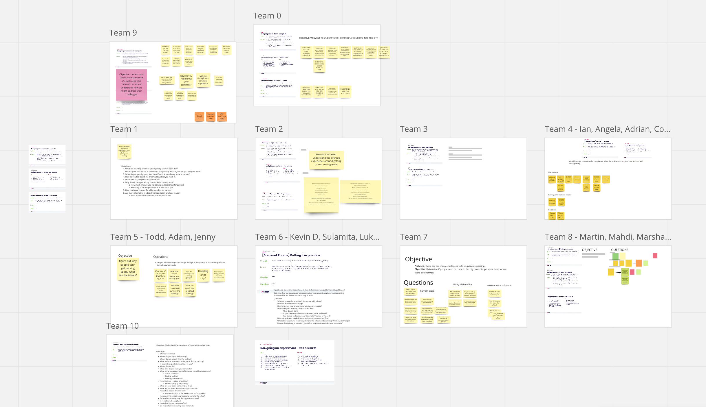
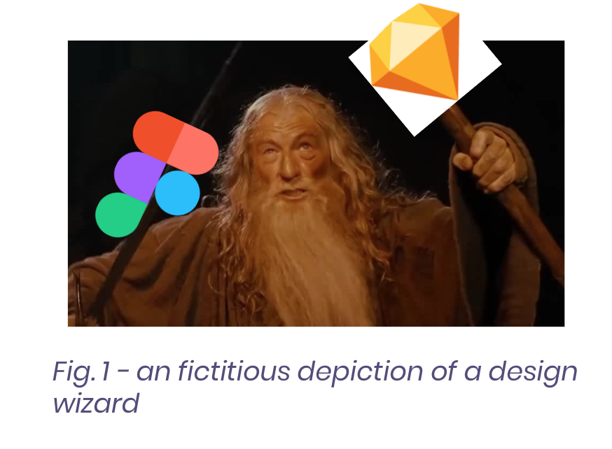
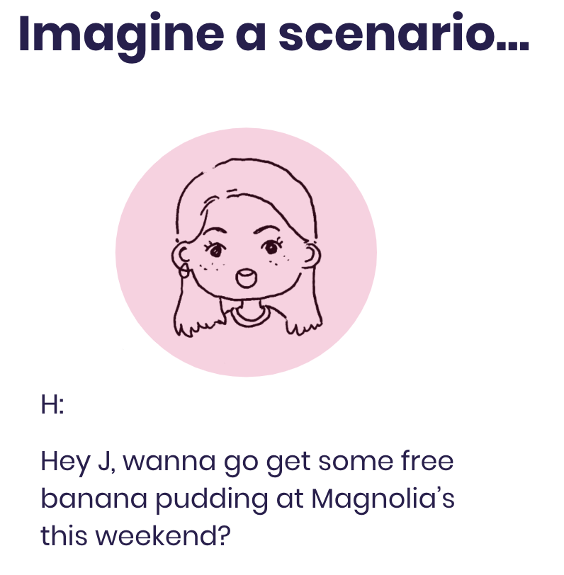
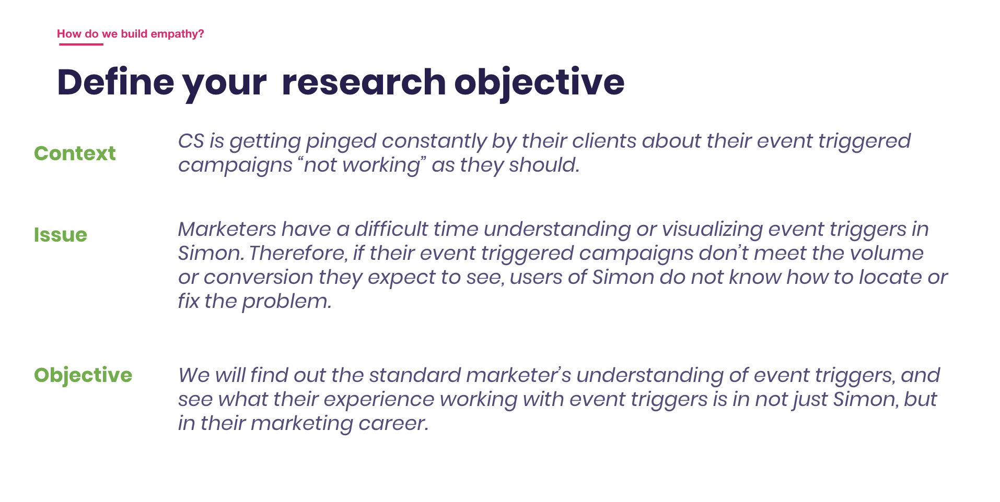
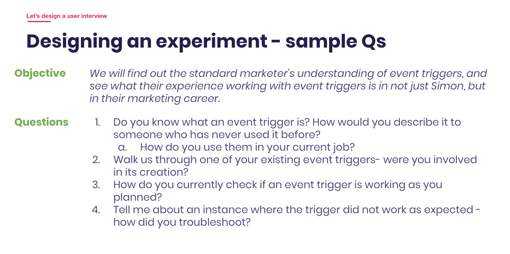
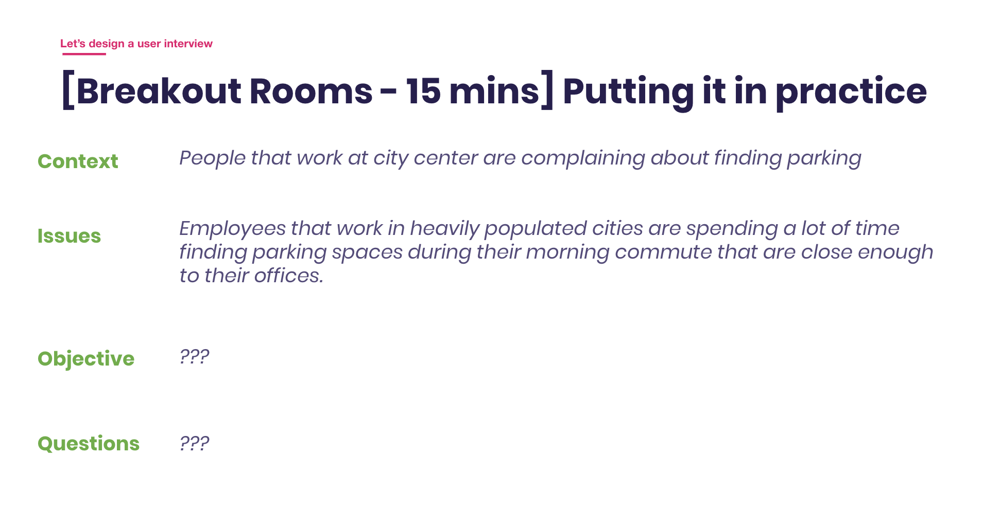
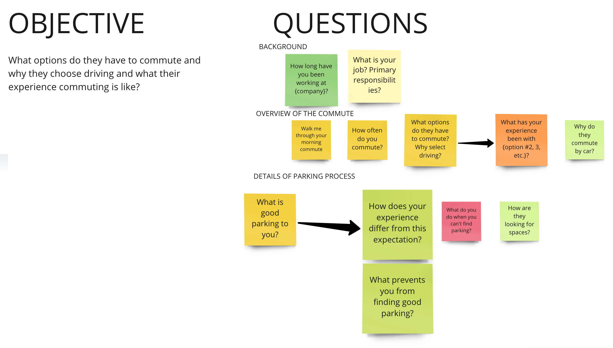
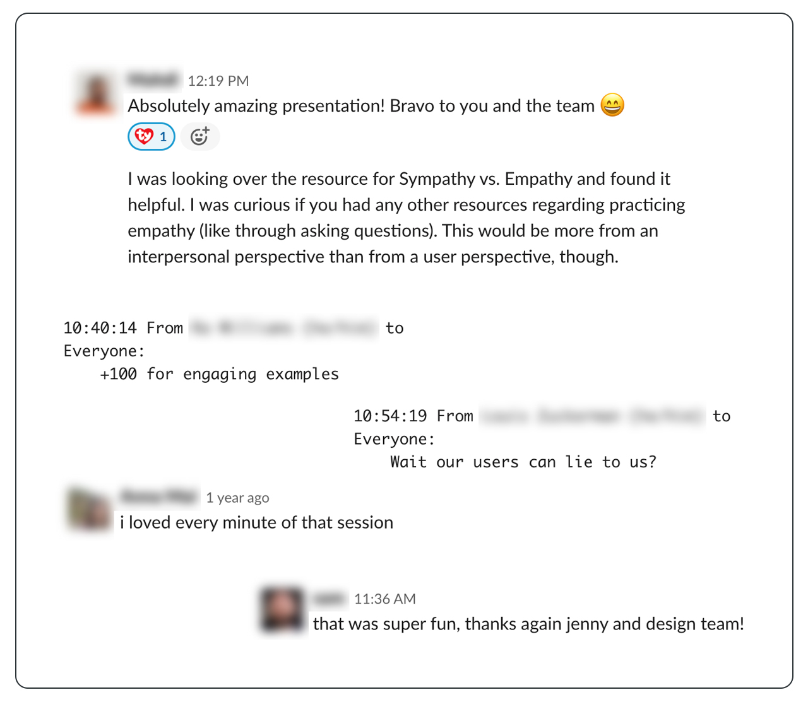

Workshop Design / User Research
Practicing Empathy, a Workshop
A workshop created to help a growing product organization understand how user research informs design decisions and development trade-offs.
Why a workshop
During a period of organizational growth, I saw a need for the broader team to better understand user-centric thinking. I had been tackling trade-off conversations individually, so I partnered with other designers to create a shared workshop experience.

Objective
The workshop was designed to establish a baseline understanding of user empathy, show a Simon Data product problem and a way to scope its research, and give participants an opportunity to apply the concepts themselves.
- Understand what user empathy can look like in practice.
- Connect research planning to a relevant product problem.
- Practice turning assumptions into useful questions.
Setting the scene
Another designer and I opened with a short skit about how a conversation can develop differently when someone asks the right questions. The intent was to make the abstract idea of empathy memorable and approachable.

Concrete example
I then walked the group through how I would break down a real product problem: defining the research objective, surfacing assumptions, and writing questions that could guide a meaningful conversation with users.


The workshop
Participants worked in groups of four to five to brainstorm assumptions and use them as a jumping-off point for interview questions. Afterwards, a volunteer role-played an interview while I acted as the user, and the group discussed possible solutions based on what we learned.


After the workshop
One presentation could not solve every process challenge, but it started valuable conversations. People asked to be more involved in research, and design reviews with engineers began to include a more explicit layer of user-centric thinking. The full presentation slide deck is also available.
